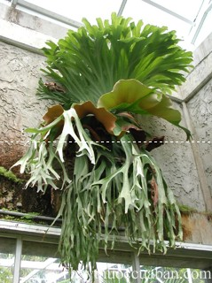
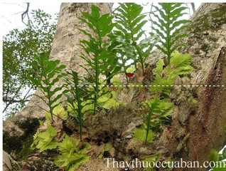

Tên khác
Tên thường gọi: Ổ rồng, lan ổ rồng, lan tai tượng, ổ phượng, lan bắp cải
Tên khoa học: Platycerium grande A. Cunn ex J. Sm.
Họ khoa học: thuộc họ Dương xỉ - Polypodiaceae.
Cây ổ rồng
(Mô tả, hình ảnh cây ổ rồng, phân bố, thu hái, chế biến, thành phần hóa học, tác dụng dược lý...)
Mô tả:

Bộ phận dùng:
Toàn cây - Herba Platycerii.
Nơi sống và thu hái:
Loài phân bố khắp cùng các cao độ ở miền Nam nước ta từ Ðà Nẵng trở vào Nam, thường gặp trong rừng thứ sinh. Cũng thường được trồng làm cảnh.
Vị thuốc ổ rồng
(Công dụng, liều dùng, tính vị, quy kinh)
Công dụng, chỉ định và phối hợp:
Thân rễ và lá giã đắp dùng bó gãy xương. Thân rễ còn được dùng chữa phù thũng.
Ở Campuchia người ta còn dùng lá giã nát trị phù ở chân và tay; người ta cũng dùng nước chứa trong lá cho phụ nữ có mang uống.
Liều dùng:
Dùng ngoài liều không cố định
Tác dụng chữa bệnh của vị thuốc ổ rồng
Bó gãy xương
Dùng thân, rễ và lá giã nát để đắp và bó vào vùng xương bị gãy
Chữa phù thũng
Lá ổ rồng sắc uống
Trị ghẻ ngứa
Lá giã nhỏ với ít muối đắp hoặc lá phơi khô đốt thành tro rắc lên các nốt ghẻ để trị bệnh ghẻ ngứa.
Tham khảo
Phân loại
Lan ổ rồng hay còn gọi là lan tai tượng là một loài dương xỉ có kích thước lớn. Ở Việt nam đã tìm thấy 3 loại cây như sau: Ổ rồng hay còn gọi rồng ổ lớn, lan bắp cải có tên khoa học là Platycerium grande A. Cunn ex J. Sm., thuộc họ dương xỉ; Ổ rồng chẻ hai có tên khoa học là Platycerium bifurcatum BL, Common Staghorn Fern; Ổ rồng tràng hay ổ rồng nhỏ tên khoa học là Platycerium coronarium (Koen) Desv.
Tránh nhầm lẫn cây ổ rồng (lan ổ rồng) với cây tổ rồng

Để làm thuốc, khi thu hái mang về phải rửa sạch đất cát, bóc bỏ lá, phơi khô ngay. Sau khi khô, hơ qua lửa cho cháy hết lông nhỏ phủ xung quanh là được. Khi dùng, thái thành lát nhỏ.
Một số bài thuốc có tác dụng bổ thận
Bài 1: Chữa ù tai, đau lưng do chứng thận hư: Tổ rồng, thái nhỏ tán bột 4 - 6g, bầu dục lợn 1 cái. Đổ tổ rồng đã tán nhỏ nhồi vào trong bầu dục lợn, nướng hoặc đem hấp cách thủy chín. Ăn ngày 1 quả, ăn cách ngày, 5 ngày 1 liệu trình.
Bài 2: Chữa nhức răng chảy máu chân răng (Trường hợp thận hư, dương phù sinh đau răng, chảy máu chân răng, răng lung lay): Tổ rồng khoảng 16g (có thể hơn để dùng dần), giã nhỏ, sao đen, tán thành bột mịn, xát vào lợi, ngày 2 lần, sáng và tối trước khi đi ngủ đã chải sạch răng.
Ngoài ra, dùng thêm bài thuốc: Tổ rồng 16g, thục địa 16g, đơn bì 12g, sơn dược 12g, tế tân 2,4g, bạch linh 12g, trạch tả 12g, sơn thù 12g. Tất cả rửa sạch, cho vào ấm đổ 700ml nước sắc còn 250ml, chia 2 lần uống trong ngày. Dùng 10 ngày một liệu trình.
Bài 3: Chữa mỏi gối, nhức xương khớp do thận hư: Tổ rồng 16g, rễ cỏ xước 12g, cẩu tích 20g, dây đau xương 12g, rễ gối hạc 12g, thỏ ty tử 12g, hoài sơn 20g, tỳ giải 16g, đỗ trọng 16g. Tất cả cho vào ấm, đổ 550ml nước sắc còn 200ml, chia 2 lần uống trong ngày. 10 ngày 1 liệu trình.
Bài 4: Đau người ê ẩm do ngã: Tổ rồng 15g, sinh địa 10g, lá sen tươi 10g, trắc bá tươi 10g. Tất cả rửa sạch, cho vào ấm đổ 500ml nước, sắc còn 200ml, chia 2 lần uống trong ngày. Dùng liền 5 ngày.
Lưu ý: Người âm hư, huyết hư đều không dùng được.
Vì thế người dùng nên cẩn trọng để không bị nhầm lẫn
Nơi mua bán vị thuốc ten1 đạt chất lượng ở đâu?
Trước thực trạng thuốc đông dược kém chất lượng, nguồn gốc không rõ ràng,... xuất hiện tràn lan trên thị trường, làm ảnh hưởng tới hiệu quả điều trị cũng như ảnh hưởng tới sức khỏe của bệnh nhân. Việc lựa chọn những địa chỉ uy tín để mua thuốc đông dược là rất quan trọng và cần thiết. Vậy khách hàng có thể mua vị thuốc ten1 ở đâu?
ten1 là vị thuốc nam quý, được sử dụng rộng rãi trong YHCT. Hiện tại hầu hết các cửa hàng thuốc đông dược, phòng khám đông y, phòng chẩn trị YHCT... đều có bán vị thuốc này. Tuy nhiên người mua nên chọn những địa chỉ có uy tín, đảm bảo chất lượng, có giấy phép hoạt động để mua được vị thuốc đạt chất lượng.
Với mong muốn bệnh nhân được sử dụng những loại dược liệu đúng, chất lượng tốt, phòng khám Đông y Nguyễn Hữu Toàn không chỉ là đia chỉ khám chữa bệnh tin cậy, uy tín chất lượng mà còn cung cấp cho khách hàng những vị thuốc đông y (thuốc nam, thuốc bắc) đúng, chuẩn, đạt chuẩn chất lượng. Các vị thuốc có trong tiêu chuẩn Dược điển Việt Nam đều được nghành y tế kiểm nghiệm đạt chất lượng tiêu chuẩn.
Vị thuốc ten1 được bán tại Phòng khám là thuốc đã được bào chế theo Tiêu chuẩn NHT.
Giá bán vị thuốc ten1 tại Phòng khám Đông y Nguyễn Hữu Toàn: Gọi 18006834 để biết chi tiết
Tùy theo thời điểm giá bán có thể thay đổi.
+ Khách hàng có thể mua trực tiếp tại địa chỉ phòng khám: Cơ sở 1: Số 481 lô 22 Lê Hồng Phong, Phường Gia Viên, Thành phố Hải Phòng
+ Mua trực tuyến: Thuốc được chuyển qua đường bưu điện. Khi nhận được thuốc khách hàng thanh toán tiền COD.
Tag: cay ten2, vi thuoc ten2, cong dung ten2, Hinh anh cay ten2, Tac dung ten2, Thuoc nam
Thaythuoccuaban.com Tổng hợp
*************************